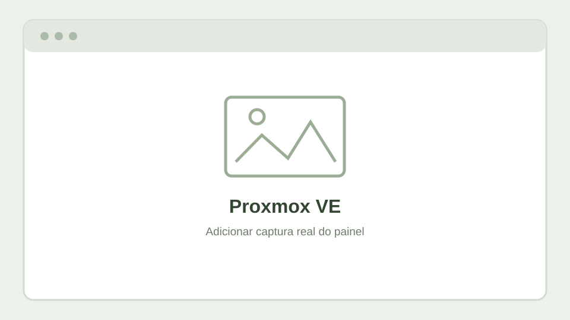

Objetivo
O Proxmox VE é utilizado como plataforma de laboratório para executar máquinas virtuais e containers Linux. Permite consolidar aplicações, testar sistemas operativos e recuperar ambientes por cópias de segurança.

O que documentar
Tópicos
- Organização de VMs e containers LXC por função.
- Bridges de rede e integração com VLANs.
- Armazenamento para sistemas, imagens ISO e backups.
- Snapshots e procedimentos de recuperação.
- Máquinas virtuais para testes de sistemas antigos e atuais.
Exemplos práticos
VM ou container: quando usar?
Uma VM virtualiza um sistema operativo completo e é apropriada para cenários que precisam de um kernel próprio. Um container LXC partilha o kernel Linux do host, sendo geralmente mais leve para serviços compatíveis.
Estratégia de backups
Manter cópias regulares das VMs e containers importantes, preferencialmente noutro suporte de armazenamento, e testar periodicamente a reposição para confirmar que os ficheiros são utilizáveis.